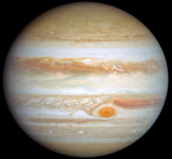

(點擊圖片開啟 NASA 3D 互動模型)
⚡ 基本概覽
| 類型 | 氣態巨行星 (類木行星) |
|---|---|
| 平均直徑 | 約 139,820 km (地球的 11 倍) |
| 繞行座標 | 繞行太陽 (距離約 5.2 AU) |
| 自轉週期 | 約 9 小時 55 分 (全太陽系最快) |
| 公轉週期 | 約 11.86 地球年 |
| 衛星數量 | 已確認 95 顆 |
| 大氣成分 | 約 90% 氫、10% 氦 (與太陽成分相似) |
🔍 關於 木星 (Jupiter)
木星是太陽系中質量與體積最大的行星，其質量是其他行星總和的兩倍以上。它是典型的氣態巨行星，沒有固實的表面。
最著名的特徵是大紅斑，這是一個比地球還大的巨大氣旋風暴。木星擁有強大的磁場，且因為自轉極快，導致其外觀呈現明顯的扁球體，並在雲層中形成條紋狀的風暴帶。